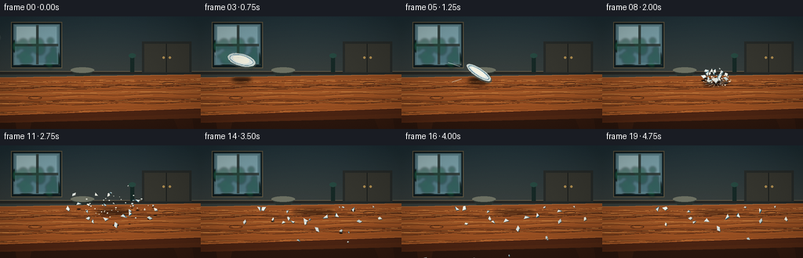
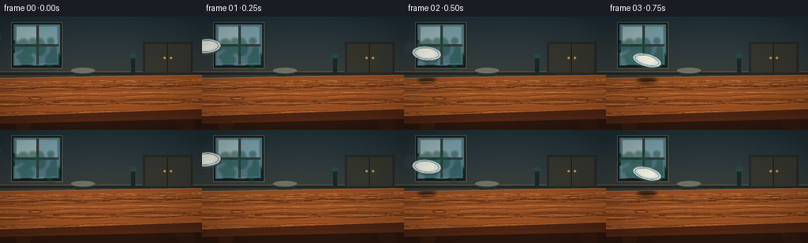

CODING AGENTS AS PIXEL WORLD MODELS
traex/GPT-5.6-Sol · phygen_135
点击播放 · 原生 RGB 像素
逐轮保存的候选
回放视频、检查图与代码变化。
每份候选均可单独播放。实际图片检查记录在下方工具轨迹中。
候选 01播放与检查图
点击播放 · 原生 RGB 像素


展开代码变化
--- 上一保存版本
+++ 本次保存版本
@@ -0,0 +1,274 @@
+from pathlib import Path
+import json, math, random
+import numpy as np
+from PIL import Image, ImageDraw, ImageFilter
+import artifact_io
+
+CASE_DIR = Path(__file__).resolve().parent
+spec = json.loads((CASE_DIR / "task_spec.json").read_text())
+W, H, N = spec["width"], spec["height"], spec["frames"]
+S = 3
+random.seed(135)
+
+def sc(v): return int(round(v*S))
+def pts(seq): return [(sc(x), sc(y)) for x,y in seq]
+def poly(draw, seq, **kw): draw.polygon(pts(seq), **kw)
+def line(draw, seq, **kw):
+ if 'width' in kw: kw['width']=max(1,sc(kw['width']))
+ draw.line(pts(seq), **kw)
+def ellipse(draw, b, **kw):
+ draw.ellipse(tuple(sc(x) for x in b), **kw)
+def rectangle(draw, b, **kw): draw.rectangle(tuple(sc(x) for x in b), **kw)
+
+# Stable decorative geometry, dust and grain.
+rng = random.Random(8127)
+grain_specs=[]
+for i in range(52):
+ y=rng.uniform(82,128); amp=rng.uniform(.3,1.7); phase=rng.uniform(0,6.28)
+ col=rng.choice([(86,42,20,85),(238,164,84,35),(48,25,15,50),(180,96,43,48)])
+ grain_specs.append((y,amp,phase,col,rng.choice([.35,.45,.65])))
+shard_defs=[]
+# A designed radial breakup: varied fragments, including recognizable blue rim pieces.
+for i in range(24):
+ a = 2*math.pi*i/24 + rng.uniform(-.12,.12)
+ speed = rng.uniform(20,58)
+ # horizontal world velocity, depth velocity, upward kick
+ du = math.cos(a)*speed*1.18
+ dv = math.sin(a)*speed*1.35 + rng.uniform(-4,8)
+ vz = rng.uniform(18,47) + (9 if i%5==0 else 0)
+ size = rng.uniform(2.0,5.0) if i<18 else rng.uniform(1.1,2.1)
+ shard_defs.append(dict(
+ du=du,dv=dv,vz=vz,size=size,phase=rng.uniform(0,6.28),spin=rng.uniform(-8,8),
+ shape=i%4, rim=(i%4==0 or i in (3,11,18)), tone=rng.choice([(244,244,235),(225,229,224),(255,250,232),(203,216,214)])
+ ))
+chip_specs=[(rng.uniform(-1,1),rng.uniform(-1,1),rng.uniform(.35,1.0),rng.uniform(0,6.2)) for _ in range(38)]
+
+def make_background():
+ # Fine, cinematic cool/warm gradient at supersampled resolution.
+ yy=np.linspace(0,1,H*S)[:,None]
+ xx=np.linspace(0,1,W*S)[None,:]
+ top=np.array([31.,49.,56.]); bottom=np.array([76.,72.,61.])
+ arr=np.empty((H*S,W*S,3),dtype=np.float32)
+ for c in range(3): arr[:,:,c]=top[c]*(1-yy)+bottom[c]*yy + 4*np.sin(xx*math.pi)*np.exp(-yy*1.8)
+ arr=np.clip(arr,0,255).astype(np.uint8)
+ im=Image.fromarray(arr,"RGB").convert("RGBA")
+ d=ImageDraw.Draw(im,'RGBA')
+ # Recessed window and soft daylight.
+ rectangle(d,(14,7,79,66),fill=(17,31,35,255),outline=(102,91,68,255),width=sc(1))
+ for k in range(18):
+ inset=k*.65
+ rectangle(d,(17+inset,10+inset*.35,76-inset,62-inset*.35),fill=(77+k*3,112+k*2,121+k,8))
+ rectangle(d,(19,11,74,61),fill=(94,132,141,210))
+ # sky glow panes
+ rectangle(d,(21,13,46,35),fill=(159,190,193,145)); rectangle(d,(49,13,72,35),fill=(127,166,175,150))
+ rectangle(d,(21,38,46,59),fill=(87,131,141,165)); rectangle(d,(49,38,72,59),fill=(79,119,129,170))
+ rectangle(d,(46,11,49,61),fill=(54,68,66,240)); rectangle(d,(19,35,74,38),fill=(54,68,66,240))
+ # A blurred patch of foliage outside.
+ foliage=Image.new("RGBA",im.size,(0,0,0,0)); fd=ImageDraw.Draw(foliage,'RGBA')
+ for i in range(26):
+ x=rng.uniform(18,75); y=rng.uniform(31,63); r=rng.uniform(2,7)
+ ellipse(fd,(x-r,y-r,x+r,y+r),fill=(22,66+rng.randrange(18),56,90))
+ foliage=foliage.filter(ImageFilter.GaussianBlur(sc(1.2))); im=Image.alpha_composite(im,foliage)
+ d=ImageDraw.Draw(im,'RGBA')
+ # Back wall trim and distant sideboard.
+ rectangle(d,(0,70,256,74),fill=(37,38,35,255)); line(d,[(0,70),(256,70)],fill=(120,107,83,100),width=.6)
+ rectangle(d,(181,32,244,73),fill=(39,43,41,255)); rectangle(d,(184,35,241,71),fill=(55,55,48,255))
+ line(d,[(212,35),(212,71)],fill=(24,28,27,180),width=1)
+ ellipse(d,(207,51,210,54),fill=(180,145,82,170)); ellipse(d,(215,51,218,54),fill=(180,145,82,170))
+ # Bowl and bottle silhouettes behind table.
+ rectangle(d,(166,50,171,71),fill=(22,41,38,230)); ellipse(d,(164,47,173,53),fill=(39,73,65,240))
+ poly(d,[(90,69),(120,69),(114,76),(96,76)],fill=(41,48,44,245)); ellipse(d,(90,65,120,72),fill=(109,113,99,200))
+ # Soft global vignette later.
+ return im
+
+BG=make_background()
+
+def draw_table(im):
+ d=ImageDraw.Draw(im,'RGBA')
+ # underside / sturdy legs
+ poly(d,[(0,121),(256,116),(256,144),(0,144)],fill=(48,25,15,255))
+ poly(d,[(17,121),(43,120),(38,144),(21,144)],fill=(61,31,17,255))
+ poly(d,[(216,118),(243,118),(247,144),(227,144)],fill=(55,28,16,255))
+ # broad solid apron
+ poly(d,[(0,119),(256,114),(256,130),(0,136)],fill=(89,43,21,255))
+ line(d,[(0,123),(256,118)],fill=(186,100,45,125),width=1)
+ # tabletop base and thick front lip
+ top=[(0,78),(256,74),(256,119),(0,128)]
+ poly(d,top,fill=(126,66,30,255))
+ # surface warm light gradient strips
+ for k in range(22):
+ y0=78+k*2.2
+ col=(150+int(k*.7),79+int(k*.3),35,18)
+ poly(d,[(0,y0),(256,y0-4),(256,y0-2.0),(0,y0+2.0)],fill=col)
+ # grain clipped by top mask
+ grain=Image.new('RGBA',im.size,(0,0,0,0)); gd=ImageDraw.Draw(grain,'RGBA')
+ for y,amp,ph,col,wid in grain_specs:
+ p=[]
+ for x in range(-5,262,8): p.append((x,y-0.016*x+math.sin(x/15+ph)*amp))
+ line(gd,p,fill=col,width=wid)
+ # knots
+ ellipse(gd,(36,102,53,106),outline=(59,29,15,95),width=sc(.65)); ellipse(gd,(40,103,49,105),outline=(205,118,53,55),width=sc(.5))
+ ellipse(gd,(207,84,222,88),outline=(62,31,17,85),width=sc(.6))
+ mask=Image.new('L',im.size,0); md=ImageDraw.Draw(mask); md.polygon(pts(top),fill=255)
+ grain.putalpha(Image.composite(grain.getchannel('A'),Image.new('L',im.size,0),mask))
+ im.alpha_composite(grain)
+ d=ImageDraw.Draw(im,'RGBA')
+ line(d,[(0,78),(256,74)],fill=(224,139,70,150),width=.75)
+ poly(d,[(0,126),(256,117),(256,124),(0,134)],fill=(82,39,20,200))
+ line(d,[(0,126),(256,117)],fill=(216,118,52,125),width=1)
+
+def plate_state(frame_float):
+ # Constant high-speed diagonal approach; center reaches the tabletop at frame 7.
+ p=frame_float/7.0
+ x=-18 + 163*p
+ y=28 + 58*p + 2.8*math.sin(p*math.pi)
+ angle=-.22 + p*1.12
+ minor=8.3-2.4*p+1.0*math.sin(p*math.pi*2)
+ return x,y,angle,minor
+
+def ellipse_poly(cx,cy,rx,ry,ang,n=48):
+ ca,sa=math.cos(ang),math.sin(ang); out=[]
+ for i in range(n):
+ q=2*math.pi*i/n; ex=rx*math.cos(q); ey=ry*math.sin(q)
+ out.append((cx+ex*ca-ey*sa,cy+ex*sa+ey*ca))
+ return out
+
+def draw_plate_at(layer,cx,cy,ang,minor,alpha=255,cracked=False):
+ d=ImageDraw.Draw(layer,'RGBA')
+ # underside shadow/rim gives actual porcelain thickness
+ poly(d,ellipse_poly(cx+1.0,cy+1.6,18.2,minor+1.1,ang),fill=(70,83,81,int(alpha*.47)))
+ poly(d,ellipse_poly(cx,cy,18,minor,ang),fill=(244,245,235,alpha),outline=(191,204,201,alpha))
+ poly(d,ellipse_poly(cx-.4,cy-.4,15.5,max(2.6,minor-1.3),ang),fill=(226,235,231,alpha))
+ # shallow central well and cobalt decorative rings
+ poly(d,ellipse_poly(cx-.5,cy-.7,10.7,max(1.5,minor-3.1),ang),fill=(249,247,230,alpha))
+ line(d,ellipse_poly(cx,cy,15.2,max(2.2,minor-1.6),ang,64)+[ellipse_poly(cx,cy,15.2,max(2.2,minor-1.6),ang,64)[0]],fill=(46,103,129,int(alpha*.92)),width=.75)
+ line(d,ellipse_poly(cx,cy,17.1,max(2.6,minor-.55),ang,64)+[ellipse_poly(cx,cy,17.1,max(2.6,minor-.55),ang,64)[0]],fill=(83,139,154,int(alpha*.75)),width=.45)
+ # specular porcelain streak
+ line(d,[(cx-7*math.cos(ang),cy-7*math.sin(ang)-minor*.25),(cx+3*math.cos(ang),cy+3*math.sin(ang)-minor*.42)],fill=(255,255,255,int(alpha*.8)),width=.8)
+ if cracked:
+ for a in (-2.7,-1.55,-.55,.15,1.0,2.15):
+ ex=cx+15*math.cos(a); ey=cy+minor*.85*math.sin(a)
+ mx=cx+6*math.cos(a+.18); my=cy+minor*.45*math.sin(a+.18)
+ line(d,[(cx,cy),(mx,my),(ex,ey)],fill=(65,78,78,220),width=.65)
+
+def impact_shadow(im, x, y, rx, alpha=80):
+ lay=Image.new('RGBA',im.size,(0,0,0,0)); d=ImageDraw.Draw(lay,'RGBA')
+ ellipse(d,(x-rx,y-2,x+rx,y+3),fill=(15,11,8,alpha))
+ lay=lay.filter(ImageFilter.GaussianBlur(sc(2.2))); im.alpha_composite(lay)
+
+def sim_shard(sh, t):
+ # Numerical rigid-ish flight with gravity, bounces and surface friction.
+ u,v,z=145.0,13.0,1.0
+ du,dv,vz=sh['du'],sh['dv'],sh['vz']
+ dt=1/180
+ steps=max(0,int(t/dt))
+ for _ in range(steps):
+ u+=du*dt; v+=dv*dt; z+=vz*dt; vz-=75*dt
+ ontable=(2<u<254 and 0<v<150)
+ if ontable and z<0:
+ z=0; vz=-vz*.39
+ du*=.72; dv*=.72
+ if abs(vz)<3.0: vz=0
+ if z==0:
+ drag=max(0,1-1.5*dt); du*=drag; dv*=drag
+ rem=t-steps*dt
+ u+=du*rem;v+=dv*rem;z+=vz*rem
+ return u,v,z
+
+def draw_shard(im, sh, idx, t):
+ u,v,z=sim_shard(sh,t)
+ sx=u; sy=78 + .31*v - z
+ if sx < -12 or sx>268 or sy>154 or sy<-15: return
+ # shadow tracks table beneath airborne pieces
+ ontable=(2<u<254 and 0<v<150)
+ if ontable and z>1:
+ d=ImageDraw.Draw(im,'RGBA'); rr=sh['size']*(.5+max(0,20-z)/50)
+ ellipse(d,(u-rr,78+.31*v-rr*.25,u+rr,78+.31*v+rr*.25),fill=(25,15,9,max(8,int(42-z))))
+ rot=sh['phase']+sh['spin']*t
+ s=sh['size']; ca,sa=math.cos(rot),math.sin(rot)
+ if sh['shape']==0: local=[(-s*.9,-s*.35),(s*.95,-s*.22),(s*.25,s*.55)]
+ elif sh['shape']==1: local=[(-s*.75,-s*.5),(s*.65,-s*.35),(s*.85,s*.28),(-s*.2,s*.58)]
+ elif sh['shape']==2: local=[(-s,-s*.18),(-s*.18,-s*.55),(s*.8,.05),(.15,s*.52)]
+ else: local=[(-s*.7,-s*.52),(s*.9,-s*.08),(-s*.15,s*.62)]
+ pp=[]
+ for x,y in local: pp.append((sx+x*ca-y*sa,sy+x*sa+y*ca))
+ d=ImageDraw.Draw(im,'RGBA')
+ # dark thin underside offset
+ poly(d,[(x+.6,y+.8) for x,y in pp],fill=(73,78,73,180))
+ poly(d,pp,fill=sh['tone']+(255,),outline=(170,181,178,255))
+ # highlight one edge
+ line(d,[pp[0],pp[1]],fill=(255,255,247,225),width=.45)
+ if sh['rim']:
+ line(d,[pp[-1],pp[0]],fill=(37,105,132,245),width=.8)
+
+def render(frame):
+ im=BG.copy(); draw_table(im)
+ if frame <= 7:
+ x,y,a,m=plate_state(frame)
+ # contact/approach shadow, increasing toward collision.
+ if x>15:
+ floor_y=79 + .03*x
+ impact_shadow(im,x,floor_y,9+frame*.7,25+frame*7)
+ # translucent directional exposure trail in the last approach frames.
+ if frame>0:
+ trail=Image.new('RGBA',im.size,(0,0,0,0))
+ for j,(back,al) in enumerate(((.24,32),(.48,18),(.72,8))):
+ tx,ty,ta,tm=plate_state(frame-back)
+ draw_plate_at(trail,tx,ty,ta,tm,al)
+ trail=trail.filter(ImageFilter.GaussianBlur(sc(1.0)))
+ im.alpha_composite(trail)
+ plate_layer=Image.new('RGBA',im.size,(0,0,0,0))
+ draw_plate_at(plate_layer,x,y,a,m,255,frame==7)
+ im.alpha_composite(plate_layer)
+ if frame in (5,6):
+ d=ImageDraw.Draw(im,'RGBA')
+ line(d,[(x-39,y-13),(x-24,y-8)],fill=(226,239,232,75),width=.7)
+ line(d,[(x-34,y+12),(x-22,y+8)],fill=(226,239,232,55),width=.5)
+ if frame==7:
+ # Sharp contact spark/chips at the exact collision point.
+ fx,fy=145,87
+ glow=Image.new('RGBA',im.size,(0,0,0,0)); gd=ImageDraw.Draw(glow,'RGBA')
+ ellipse(gd,(fx-7,fy-3,fx+7,fy+4),fill=(255,242,204,65))
+ glow=glow.filter(ImageFilter.GaussianBlur(sc(2))); im.alpha_composite(glow)
+ d=ImageDraw.Draw(im,'RGBA')
+ for q in range(10):
+ aa=q*math.pi/5+.15; ll=4+(q%3)*2
+ line(d,[(fx,fy),(fx+math.cos(aa)*ll,fy+math.sin(aa)*ll*.55)],fill=(246,245,223,190),width=.55)
+ else:
+ t=(frame-7)/4.0
+ # dark contact shadow remains only under flying cloud.
+ impact_shadow(im,145,84,14+min(t*8,12),max(15,int(55-t*15)))
+ # Fine ceramic grit makes the fracture read at first glance.
+ d=ImageDraw.Draw(im,'RGBA')
+ if t<1.35:
+ for j,(dx,dy,sz,ph) in enumerate(chip_specs):
+ rad=(12+34*t)*(0.45+0.55*((j%9)/8))
+ cx=145+dx*rad+math.cos(ph)*t*5
+ cy=84+dy*rad*.42-8*t*(1-t*.5)
+ al=max(0,int(210*(1-t/1.35)))
+ ellipse(d,(cx-sz,cy-sz*.55,cx+sz,cy+sz*.55),fill=(238,240,225,al))
+ # fragments sorted back-to-front by their current projected y.
+ ordering=[]
+ for i,sh in enumerate(shard_defs):
+ u,v,z=sim_shard(sh,t); ordering.append((78+.31*v-z,i,sh))
+ for _,i,sh in sorted(ordering): draw_shard(im,sh,i,t)
+ if frame==8:
+ d=ImageDraw.Draw(im,'RGBA')
+ for a in np.linspace(0,2*math.pi,14,endpoint=False):
+ rr=15
+ line(d,[(145+math.cos(a)*5,84+math.sin(a)*2),(145+math.cos(a)*rr,84+math.sin(a)*rr*.42)],fill=(255,246,218,95),width=.45)
+ # Gentle vignette and film-like micrograin, fixed pattern to avoid flicker.
+ arr=np.array(im.convert('RGB')).astype(np.float32)
+ h,w=arr.shape[:2]; yy,xx=np.mgrid[0:h,0:w]
+ nx=(xx-w/2)/(w/2); ny=(yy-h/2)/(h/2)
+ vig=np.clip(1-.16*(nx*nx+ny*ny),.72,1)[...,None]
+ arr*=vig
+ # subtle deterministic grain
+ rg=np.random.default_rng(90210)
+ noise=rg.normal(0,.75,(h,w,1)); arr=np.clip(arr+noise,0,255).astype(np.uint8)
+ return np.array(Image.fromarray(arr).resize((W,H),Image.Resampling.LANCZOS),dtype=np.uint8)
+
+frames=np.stack([render(i) for i in range(N)],axis=0)
+assert frames.shape==(N,H,W,3) and frames.dtype==np.uint8
+artifact_io.save(frames, CASE_DIR)
+print(f"saved {N} frames: {frames.shape} {frames.dtype}")
可观测工具轨迹
实际执行的命令与返回图片。
命令 1exit 0
/bin/bash -lc "cat prompt.txt && printf '\\n---RULES---\\n' && cat GENERATION_RULES.md && printf '\\n---SPEC---\\n' && cat task_spec.json"
命令 2exit 0
/bin/bash -lc "find . -maxdepth 2 -type f -printf '%p\\n' | sort && printf '\\nTOOLS\\n' && command -v ffmpeg || true && command -v python3 || true"
命令 3exit 0
/bin/bash -lc 'cat artifact_io.py'
命令 4exit 0
/bin/bash -lc "cat > generate.py <<'PY'
from pathlib import Path
import json, math, random
import numpy as np
from PIL import Image, ImageDraw, ImageFilter
import artifact_io
CASE_DIR = Path(__file__).resolve().parent
spec = json.loads((CASE_DIR / \"task_spec.json\").read_text())
W, H, N = spec[\"width\"], spec[\"height\"], spec[\"frames\"]
S = 3
random.seed(135)
def sc(v): return int(round(v*S))
def pts(seq): return [(sc(x), sc(y)) for x,y in seq]
def poly(draw, seq, **kw): draw.polygon(pts(seq), **kw)
def line(draw, seq, **kw):
if 'width' in kw: kw['width']=max(1,sc(kw['width']))
draw.line(pts(seq), **kw)
def ellipse(draw, b, **kw):
draw.ellipse(tuple(sc(x) for x in b), **kw)
def rectangle(draw, b, **kw): draw.rectangle(tuple(sc(x) for x in b), **kw)
# Stable decorative geometry, dust and grain.
rng = random.Random(8127)
grain_specs=[]
for i in range(52):
y=rng.uniform(82,128); amp=rng.uniform(.3,1.7); phase=rng.uniform(0,6.28)
col=rng.choice([(86,42,20,85),(238,164,84,35),(48,25,15,50),(180,96,43,48)])
grain_specs.append((y,amp,phase,col,rng.choice([.35,.45,.65])))
shard_defs=[]
# A designed radial breakup: varied fragments, including recognizable blue rim pieces.
for i in range(24):
a = 2*math.pi*i/24 + rng.uniform(-.12,.12)
speed = rng.uniform(20,58)
# horizontal world velocity, depth velocity, upward kick
du = math.cos(a)*speed*1.18
dv = math.sin(a)*speed*1.35 + rng.uniform(-4,8)
vz = rng.uniform(18,47) + (9 if i%5==0 else 0)
size = rng.uniform(2.0,5.0) if i<18 else rng.uniform(1.1,2.1)
shard_defs.append(dict(
du=du,dv=dv,vz=vz,size=size,phase=rng.uniform(0,6.28),spin=rng.uniform(-8,8),
shape=i%4, rim=(i%4==0 or i in (3,11,18)), tone=rng.choice([(244,244,235),(225,229,224),(255,250,232),(203,216,214)])
))
chip_specs=[(rng.uniform(-1,1),rng.uniform(-1,1),rng.uniform(.35,1.0),rng.uniform(0,6.2)) for _ in range(38)]
def make_background():
# Fine, cinematic cool/warm gradient at supersampled resolution.
yy=np.linspace(0,1,H*S)[:,None]
xx=np.linspace(0,1,W*S)[None,:]
top=np.array([31.,49.,56.]); bottom=np.array([76.,72.,61.])
arr=np.empty((H*S,W*S,3),dtype=np.float32)
for c in range(3): arr[:,:,c]=top[c]*(1-yy)+bottom[c]*yy + 4*np.sin(xx*math.pi)*np.exp(-yy*1.8)
arr=np.clip(arr,0,255).astype(np.uint8)
im=Image.fromarray(arr,\"RGB\").convert(\"RGBA\")
d=ImageDraw.Draw(im,'RGBA')
# Recessed window and soft daylight.
rectangle(d,(14,7,79,66),fill=(17,31,35,255),outline=(102,91,68,255),width=sc(1))
for k in range(18):
inset=k*.65
rectangle(d,(17+inset,10+inset*.35,76-inset,62-inset*.35),fill=(77+k*3,112+k*2,121+k,8))
rectangle(d,(19,11,74,61),fill=(94,132,141,210))
# sky glow panes
rectangle(d,(21,13,46,35),fill=(159,190,193,145)); rectangle(d,(49,13,72,35),fill=(127,166,175,150))
rectangle(d,(21,38,46,59),fill=(87,131,141,165)); rectangle(d,(49,38,72,59),fill=(79,119,129,170))
rectangle(d,(46,11,49,61),fill=(54,68,66,240)); rectangle(d,(19,35,74,38),fill=(54,68,66,240))
# A blurred patch of foliage outside.
foliage=Image.new(\"RGBA\",im.size,(0,0,0,0)); fd=ImageDraw.Draw(foliage,'RGBA')
for i in range(26):
x=rng.uniform(18,75); y=rng.uniform(31,63); r=rng.uniform(2,7)
ellipse(fd,(x-r,y-r,x+r,y+r),fill=(22,66+rng.randrange(18),56,90))
foliage=foliage.filter(ImageFilter.GaussianBlur(sc(1.2))); im=Image.alpha_composite(im,foliage)
d=ImageDraw.Draw(im,'RGBA')
# Back wall trim and distant sideboard.
rectangle(d,(0,70,256,74),fill=(37,38,35,255)); line(d,[(0,70),(256,70)],fill=(120,107,83,100),width=.6)
rectangle(d,(181,32,244,73),fill=(39,43,41,255)); rectangle(d,(184,35,241,71),fill=(55,55,48,255))
line(d,[(212,35),(212,71)],fill=(24,28,27,180),width=1)
ellipse(d,(207,51,210,54),fill=(180,145,82,170)); ellipse(d,(215,51,218,54),fill=(180,145,82,170))
# Bowl and bottle silhouettes behind table.
rectangle(d,(166,50,171,71),fill=(22,41,38,230)); ellipse(d,(164,47,173,53),fill=(39,73,65,240))
poly(d,[(90,69),(120,69),(114,76),(96,76)],fill=(41,48,44,245)); ellipse(d,(90,65,120,72),fill=(109,113,99,200))
# Soft global vignette later.
return im
BG=make_background()
def draw_table(im):
d=ImageDraw.Draw(im,'RGBA')
# underside / sturdy legs
poly(d,[(0,121),(256,116),(256,144),(0,144)],fill=(48,25,15,255))
poly(d,[(17,121),(43,120),(38,144),(21,144)],fill=(61,31,17,255))
poly(d,[(216,118),(243,118),(247,144),(227,144)],fill=(55,28,16,255))
# broad solid apron
poly(d,[(0,119),(256,114),(256,130),(0,136)],fill=(89,43,21,255))
line(d,[(0,123),(256,118)],fill=(186,100,45,125),width=1)
# tabletop base and thick front lip
top=[(0,78),(256,74),(256,119),(0,128)]
poly(d,top,fill=(126,66,30,255))
# surface warm light gradient strips
for k in range(22):
y0=78+k*2.2
col=(150+int(k*.7),79+int(k*.3),35,18)
poly(d,[(0,y0),(256,y0-4),(256,y0-2.0),(0,y0+2.0)],fill=col)
# grain clipped by top mask
grain=Image.new('RGBA',im.size,(0,0,0,0)); gd=ImageDraw.Draw(grain,'RGBA')
for y,amp,ph,col,wid in grain_specs:
p=[]
for x in range(-5,262,8): p.append((x,y-0.016*x+math.sin(x/15+ph)*amp))
line(gd,p,fill=col,width=wid)
# knots
ellipse(gd,(36,102,53,106),outline=(59,29,15,95),width=sc(.65)); ellipse(gd,(40,103,49,105),outline=(205,118,53,55),width=sc(.5))
ellipse(gd,(207,84,222,88),outline=(62,31,17,85),width=sc(.6))
mask=Image.new('L',im.size,0); md=ImageDraw.Draw(mask); md.polygon(pts(top),fill=255)
grain.putalpha(Image.composite(grain.getchannel('A'),Image.new('L',im.size,0),mask))
im.alpha_composite(grain)
d=ImageDraw.Draw(im,'RGBA')
line(d,[(0,78),(256,74)],fill=(224,139,70,150),width=.75)
poly(d,[(0,126),(256,117),(256,124),(0,134)],fill=(82,39,20,200))
line(d,[(0,126),(256,117)],fill=(216,118,52,125),width=1)
def plate_state(frame_float):
# Constant high-speed diagonal approach; center reaches the tabletop at frame 7.
p=frame_float/7.0
x=-18 + 163*p
y=28 + 58*p + 2.8*math.sin(p*math.pi)
angle=-.22 + p*1.12
minor=8.3-2.4*p+1.0*math.sin(p*math.pi*2)
return x,y,angle,minor
def ellipse_poly(cx,cy,rx,ry,ang,n=48):
ca,sa=math.cos(ang),math.sin(ang); out=[]
for i in range(n):
q=2*math.pi*i/n; ex=rx*math.cos(q); ey=ry*math.sin(q)
out.append((cx+ex*ca-ey*sa,cy+ex*sa+ey*ca))
return out
def draw_plate_at(layer,cx,cy,ang,minor,alpha=255,cracked=False):
d=ImageDraw.Draw(layer,'RGBA')
# underside shadow/rim gives actual porcelain thickness
poly(d,ellipse_poly(cx+1.0,cy+1.6,18.2,minor+1.1,ang),fill=(70,83,81,int(alpha*.47)))
poly(d,ellipse_poly(cx,cy,18,minor,ang),fill=(244,245,235,alpha),outline=(191,204,201,alpha))
poly(d,ellipse_poly(cx-.4,cy-.4,15.5,max(2.6,minor-1.3),ang),fill=(226,235,231,alpha))
# shallow central well and cobalt decorative rings
poly(d,ellipse_poly(cx-.5,cy-.7,10.7,max(1.5,minor-3.1),ang),fill=(249,247,230,alpha))
line(d,ellipse_poly(cx,cy,15.2,max(2.2,minor-1.6),ang,64)+[ellipse_poly(cx,cy,15.2,max(2.2,minor-1.6),ang,64)[0]],fill=(46,103,129,int(alpha*.92)),width=.75)
line(d,ellipse_poly(cx,cy,17.1,max(2.6,minor-.55),ang,64)+[ellipse_poly(cx,cy,17.1,max(2.6,minor-.55),ang,64)[0]],fill=(83,139,154,int(alpha*.75)),width=.45)
# specular porcelain streak
line(d,[(cx-7*math.cos(ang),cy-7*math.sin(ang)-minor*.25),(cx+3*math.cos(ang),cy+3*math.sin(ang)-minor*.42)],fill=(255,255,255,int(alpha*.8)),width=.8)
if cracked:
for a in (-2.7,-1.55,-.55,.15,1.0,2.15):
ex=cx+15*math.cos(a); ey=cy+minor*.85*math.sin(a)
mx=cx+6*math.cos(a+.18); my=cy+minor*.45*math.sin(a+.18)
line(d,[(cx,cy),(mx,my),(ex,ey)],fill=(65,78,78,220),width=.65)
def impact_shadow(im, x, y, rx, alpha=80):
lay=Image.new('RGBA',im.size,(0,0,0,0)); d=ImageDraw.Draw(lay,'RGBA')
ellipse(d,(x-rx,y-2,x+rx,y+3),fill=(15,11,8,alpha))
lay=lay.filter(ImageFilter.GaussianBlur(sc(2.2))); im.alpha_composite(lay)
def sim_shard(sh, t):
# Numerical rigid-ish flight with gravity, bounces and surface friction.
u,v,z=145.0,13.0,1.0
du,dv,vz=sh['du'],sh['dv'],sh['vz']
dt=1/180
steps=max(0,int(t/dt))
for _ in range(steps):
u+=du*dt; v+=dv*dt; z+=vz*dt; vz-=75*dt
ontable=(2<u<254 and 0<v<150)
if ontable and z<0:
z=0; vz=-vz*.39
du*=.72; dv*=.72
if abs(vz)<3.0: vz=0
if z==0:
drag=max(0,1-1.5*dt); du*=drag; dv*=drag
rem=t-steps*dt
u+=du*rem;v+=dv*rem;z+=vz*rem
return u,v,z
def draw_shard(im, sh, idx, t):
u,v,z=sim_shard(sh,t)
sx=u; sy=78 + .31*v - z
if sx < -12 or sx>268 or sy>154 or sy<-15: return
# shadow tracks table beneath airborne pieces
ontable=(2<u<254 and 0<v<150)
if ontable and z>1:
d=ImageDraw.Draw(im,'RGBA'); rr=sh['size']*(.5+max(0,20-z)/50)
ellipse(d,(u-rr,78+.31*v-rr*.25,u+rr,78+.31*v+rr*.25),fill=(25,15,9,max(8,int(42-z))))
rot=sh['phase']+sh['spin']*t
s=sh['size']; ca,sa=math.cos(rot),math.sin(rot)
if sh['shape']==0: local=[(-s*.9,-s*.35),(s*.95,-s*.22),(s*.25,s*.55)]
elif sh['shape']==1: local=[(-s*.75,-s*.5),(s*.65,-s*.35),(s*.85,s*.28),(-s*.2,s*.58)]
elif sh['shape']==2: local=[(-s,-s*.18),(-s*.18,-s*.55),(s*.8,.05),(.15,s*.52)]
else: local=[(-s*.7,-s*.52),(s*.9,-s*.08),(-s*.15,s*.62)]
pp=[]
for x,y in local: pp.append((sx+x*ca-y*sa,sy+x*sa+y*ca))
d=ImageDraw.Draw(im,'RGBA')
# dark thin underside offset
poly(d,[(x+.6,y+.8) for x,y in pp],fill=(73,78,73,180))
poly(d,pp,fill=sh['tone']+(255,),outline=(170,181,178,255))
# highlight one edge
line(d,[pp[0],pp[1]],fill=(255,255,247,225),width=.45)
if sh['rim']:
line(d,[pp[-1],pp[0]],fill=(37,105,132,245),width=.8)
def render(frame):
im=BG.copy(); draw_table(im)
if frame <= 7:
x,y,a,m=plate_state(frame)
# contact/approach shadow, increasing toward collision.
if x>15:
floor_y=79 + .03*x
impact_shadow(im,x,floor_y,9+frame*.7,25+frame*7)
# translucent directional exposure trail in the last approach frames.
if frame>0:
trail=Image.new('RGBA',im.size,(0,0,0,0))
for j,(back,al) in enumerate(((.24,32),(.48,18),(.72,8))):
tx,ty,ta,tm=plate_state(frame-back)
draw_plate_at(trail,tx,ty,ta,tm,al)
trail=trail.filter(ImageFilter.GaussianBlur(sc(1.0)))
im.alpha_composite(trail)
plate_layer=Image.new('RGBA',im.size,(0,0,0,0))
draw_plate_at(plate_layer,x,y,a,m,255,frame==7)
im.alpha_composite(plate_layer)
if frame in (5,6):
d=ImageDraw.Draw(im,'RGBA')
line(d,[(x-39,y-13),(x-24,y-8)],fill=(226,239,232,75),width=.7)
line(d,[(x-34,y+12),(x-22,y+8)],fill=(226,239,232,55),width=.5)
if frame==7:
# Sharp contact spark/chips at the exact collision point.
fx,fy=145,87
glow=Image.new('RGBA',im.size,(0,0,0,0)); gd=ImageDraw.Draw(glow,'RGBA')
ellipse(gd,(fx-7,fy-3,fx+7,fy+4),fill=(255,242,204,65))
glow=glow.filter(ImageFilter.GaussianBlur(sc(2))); im.alpha_composite(glow)
d=ImageDraw.Draw(im,'RGBA')
for q in range(10):
aa=q*math.pi/5+.15; ll=4+(q%3)*2
line(d,[(fx,fy),(fx+math.cos(aa)*ll,fy+math.sin(aa)*ll*.55)],fill=(246,245,223,190),width=.55)
else:
t=(frame-7)/4.0
# dark contact shadow remains only under flying cloud.
impact_shadow(im,145,84,14+min(t*8,12),max(15,int(55-t*15)))
# Fine ceramic grit makes the fracture read at first glance.
d=ImageDraw.Draw(im,'RGBA')
if t<1.35:
for j,(dx,dy,sz,ph) in enumerate(chip_specs):
rad=(12+34*t)*(0.45+0.55*((j%9)/8))
cx=145+dx*rad+math.cos(ph)*t*5
cy=84+dy*rad*.42-8*t*(1-t*.5)
al=max(0,int(210*(1-t/1.35)))
ellipse(d,(cx-sz,cy-sz*.55,cx+sz,cy+sz*.55),fill=(238,240,225,al))
# fragments sorted back-to-front by their current projected y.
ordering=[]
for i,sh in enumerate(shard_defs):
u,v,z=sim_shard(sh,t); ordering.append((78+.31*v-z,i,sh))
for _,i,sh in sorted(ordering): draw_shard(im,sh,i,t)
if frame==8:
d=ImageDraw.Draw(im,'RGBA')
for a in np.linspace(0,2*math.pi,14,endpoint=False):
rr=15
line(d,[(145+math.cos(a)*5,84+math.sin(a)*2),(145+math.cos(a)*rr,84+math.sin(a)*rr*.42)],fill=(255,246,218,95),width=.45)
# Gentle vignette and film-like micrograin, fixed pattern to avoid flicker.
arr=np.array(im.convert('RGB')).astype(np.float32)
h,w=arr.shape[:2]; yy,xx=np.mgrid[0:h,0:w]
nx=(xx-w/2)/(w/2); ny=(yy-h/2)/(h/2)
vig=np.clip(1-.16*(nx*nx+ny*ny),.72,1)[...,None]
arr*=vig
# subtle deterministic grain
rg=np.random.default_rng(90210)
noise=rg.normal(0,.75,(h,w,1)); arr=np.clip(arr+noise,0,255).astype(np.uint8)
return np.array(Image.fromarray(arr).resize((W,H),Image.Resampling.LANCZOS),dtype=np.uint8)
frames=np.stack([render(i) for i in range(N)],axis=0)
assert frames.shape==(N,H,W,3) and frames.dtype==np.uint8
artifact_io.save(frames, CASE_DIR)
print(f\"saved {N} frames: {frames.shape} {frames.dtype}\")
PY
python3 generate.py
ls -lh pixels.npz inspection.png index.html frames/00.png frames/19.png"命令 5exit 0
/bin/bash -lc "python3 - <<'PY'
import numpy as np
from PIL import Image
from pathlib import Path
z=np.load('pixels.npz')['pixels']
assert z.shape==(144,256,20)
ims=np.stack([np.asarray(Image.open(f'frames/{i:02d}.png').convert('RGB')) for i in range(20)])
print('frames',ims.shape,ims.dtype,'range',ims.min(),ims.max())
print('mean frame deltas', [round(float(np.abs(ims[i].astype(int)-ims[i-1]).mean()),2) for i in range(1,20)])
print('artifacts', all(Path(x).exists() and Path(x).stat().st_size>0 for x in ['pixels.npz','index.html','inspection.png','transition_check.png']))
PY
python3 -m py_compile generate.py"保存候选 1 份；完成命令 5 次；可验证图片返回 0 张。原始 API 响应与完整日志保留在本地。